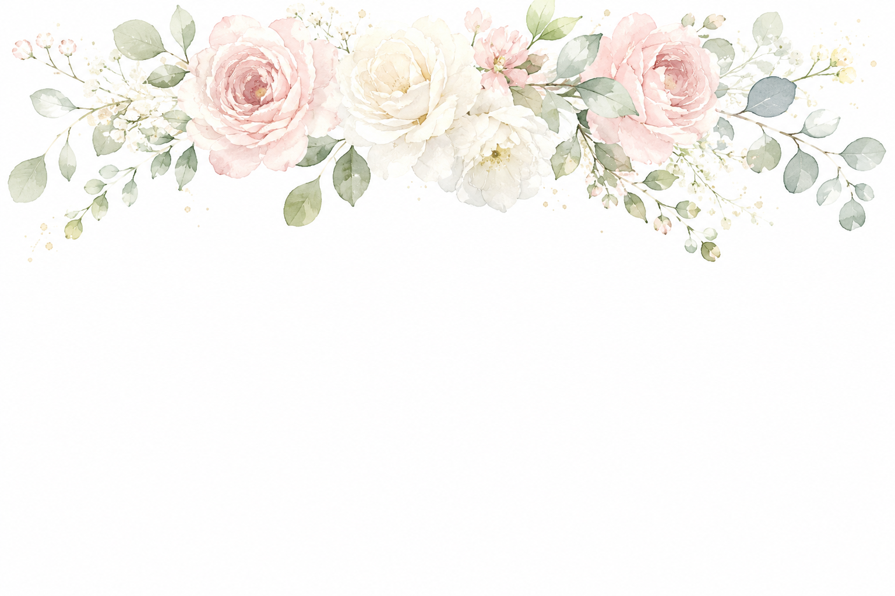
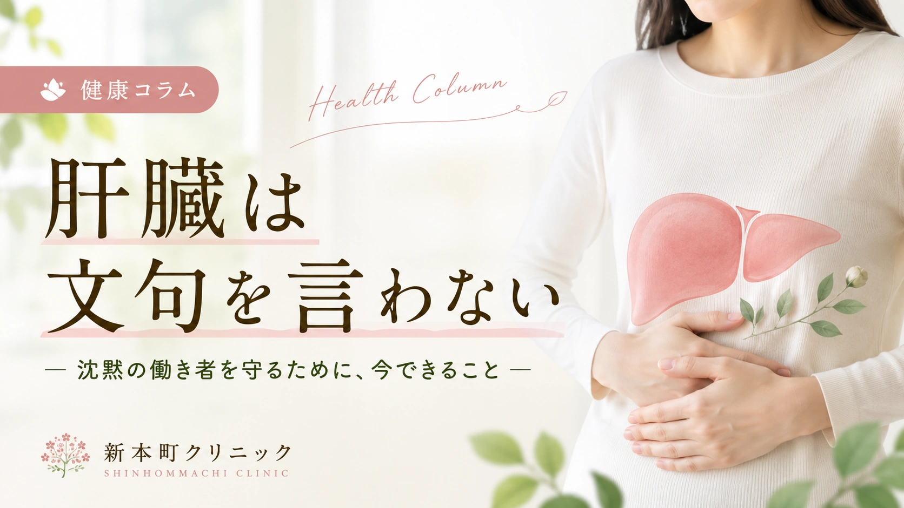
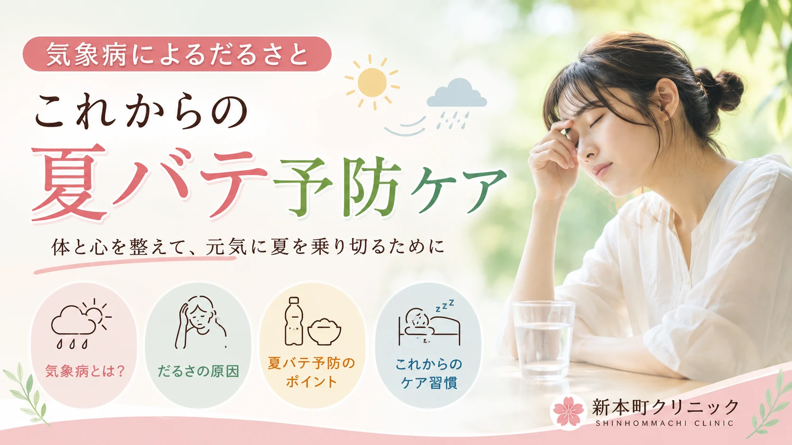
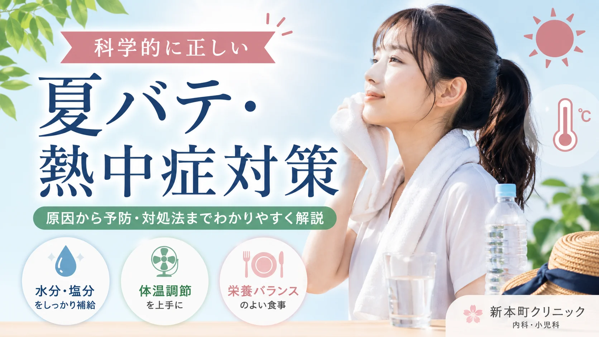
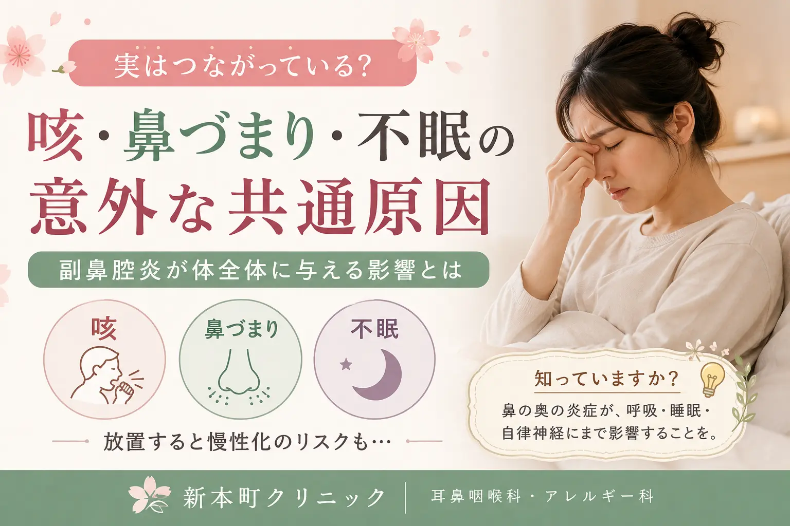
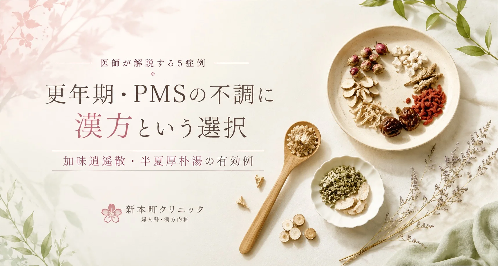
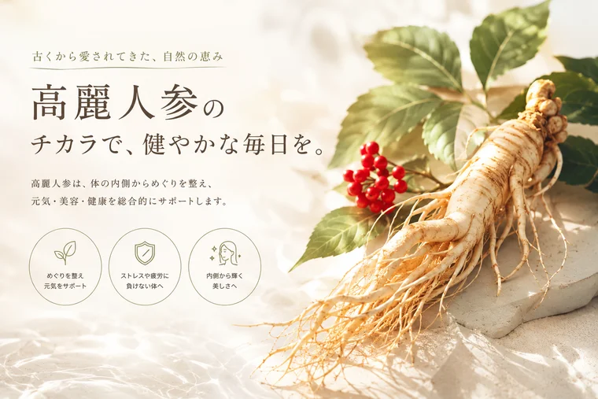
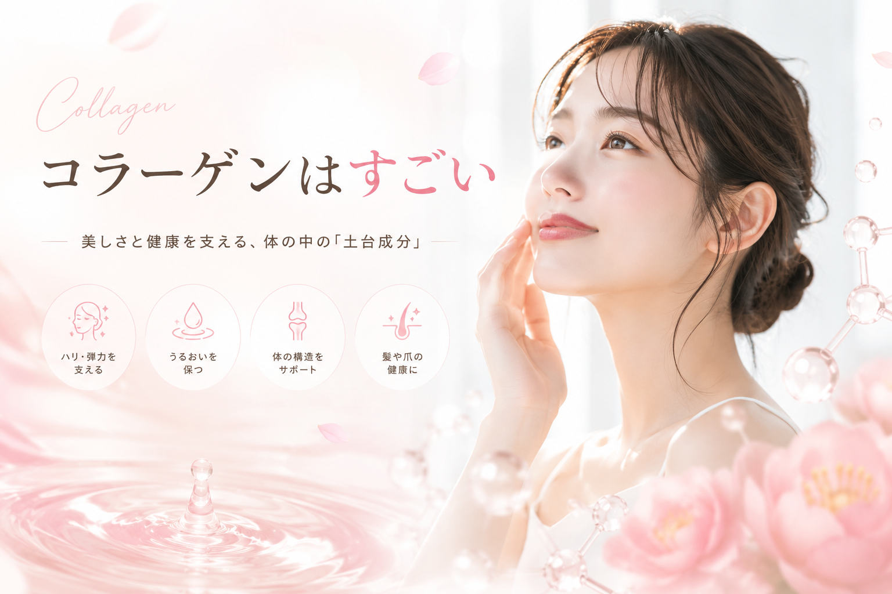

Column院長が綴る、健康と美容のヒント

点滴・注射自覚症状が出にくい「沈黙の臓器」肝臓。点滴による今のケアとプラセンタ筋注による未来のケアを組み合わせた「ダブルケアアプローチ」を、臨床データとともに当院院長が解説します。
続きを読む →
漢方・和漢素材気圧の変動で起こる原因不明のだるさ・眠気の正体を、東洋医学の「水滞」「気虚」という視点から解説。五苓散・補中益気湯を使い分けた、今日からできる夏バテ予防ケアをご紹介します。
続きを読む →
漢方・和漢素材水を飲むだけでは防げない熱中症。補中益気湯・五苓散と点滴を組み合わせた、科学と漢方のハイブリッドアプローチを当院院長が解説します。
続きを読む →
漢方・和漢素材ただの鼻水ではない。後鼻漏を、当院院長が解説します。
続きを読む →
漢方・和漢素材更年期・PMSに伴う不安・不眠・自律神経症状に対する加味逍遙散・半夏厚朴湯の臨床5症例を、当院院長が解説します。
続きを読む →
漢方・和漢素材古代中国の文献にも登場する高麗人参。徳川家康も愛用した歴史から、最新科学で解明されたジンセノサイドの働き、アダプトゲンとしての現代的な意義まで詳しく解説します。
続きを読む →
美容・栄養体内タンパク質の約30％を占めるコラーゲン。加齢や紫外線で失われるメカニズムから、「食べても意味がない」説の真偽、効率よく補う栄養素まで、医学的に解説します。
続きを読む →次回のコラムを
準備中です。お楽しみに！
内科・心療内科・漢方内科として、体の内側からのアプローチをご提案します。
コラムの内容についてもお気軽にご相談ください。